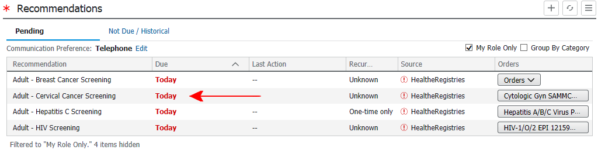
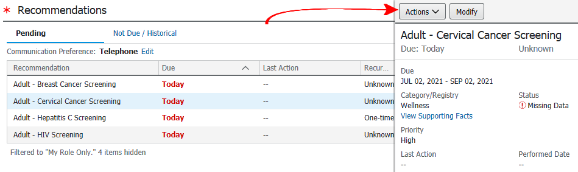
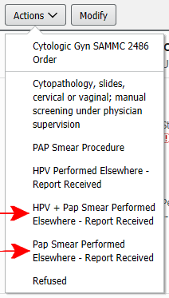
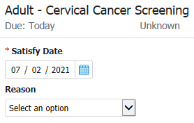
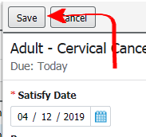

Open the "Primary Care View"

Scroll to the "Recommendations Tab"

Click on the cervical cancer screening recommendation

Click "Actions"

Select the appropriate action depending on whether a Pap was performed alone or in combination with an HPV

Double-click the month in the satisfy date section. Use the tab/shift+tab keys to move to the days and year

After updating the Pap smear date, click "Save"

SPECIAL CASE: If your patient had a hysterectomy with removal of the cervix, she will not need Pap smears anymore. Add "Acquired absence of cervix and uterus (Z90.710)" to the patient's chronic problems list. After the system updates, the recommendations tab will no longer show a recommendation for cervical cancer screening.